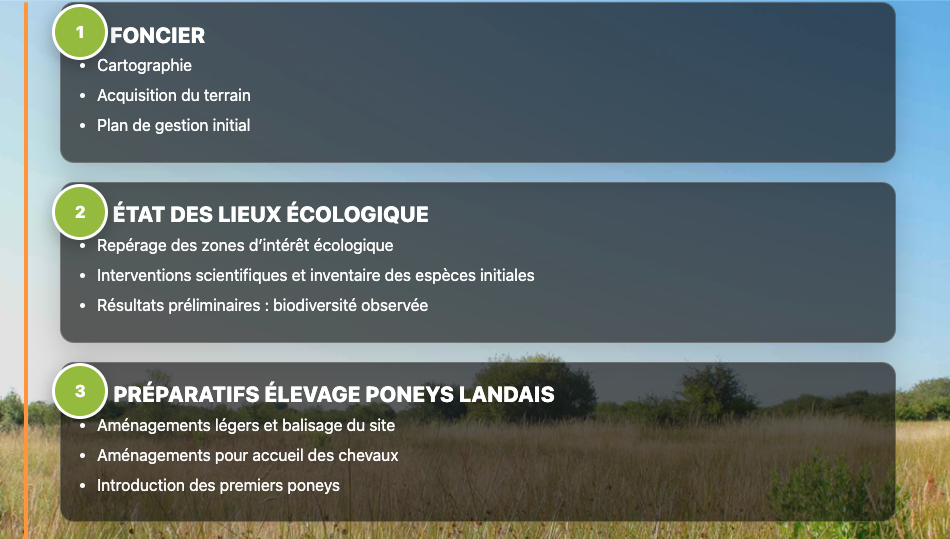

Chronologie — étapes clés 2025
Du foncier aux suivis de biodiversité, neuf étapes jalonnent l’année 2025 : cartographie, état des lieux écologique, préparatifs de l’élevage, actions artistiques, coordination scientifique et médiation.
Lire